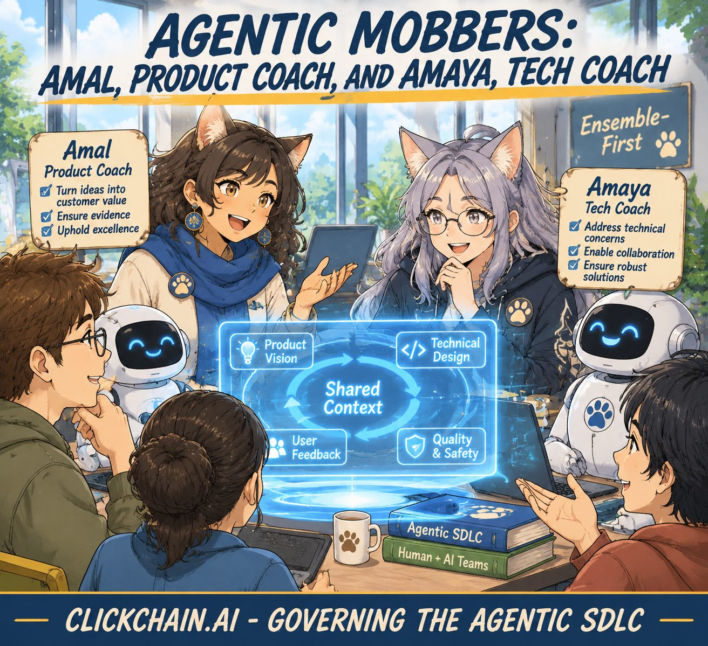

Agentic Mobbers: Amal, Product Coach, and Amaya, Tech Coach
November 9, 2026

Crucial to Agentic AI system design is cultivating the relationship between the agents and the human user.
That's why our platform "surface" is composed of two world-class AI coaches - Amal, product coach, and Amaya, tech coach.
They, and other agents, make up the multi-agent/human ensemble that is always present, sharing context, governing how we work, from ideation to value in customer hands.
Amal makes sure the human product owner can always see something on which they can provide feedback - that everything is backed by evidence - that the highest standards of cutting-edge product development are adhered to.
Amaya does the same with the tech side - if the HITL (human-in-the-loop) has strong technical opinions or concerns, she makes sure that they collaborate to address them.
This is why we call our platform an "ensemble-first" platform - it's all about continuous shared context in the ensemble.
Field notes from my work at ClickChain AI, first posted on LinkedIn. I write the notes by hand; the images are made with AI.